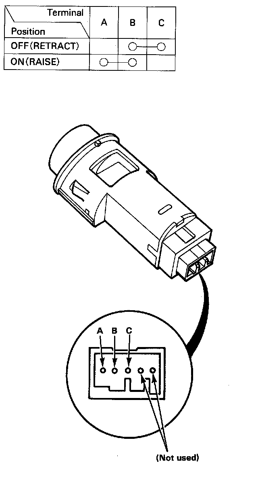

Operation CHARM
: Car repair manuals for everyone.
Home
>>
Acura
>>
1989
>>
Integra L4-1590cc 1.6L DOHC FI
>>
Repair and Diagnosis
>>
Lighting and Horns
>>
Sensors and Switches - Lighting and Horns
>>
Headlamp Switch
>>
Testing and Inspection
>>
Retractor Switch Test
Retractor Switch Test

Retractor Switch Test
1.
Remove the retractor switch.
2.
Check for continuity between the terminals in each switch position according to the table.